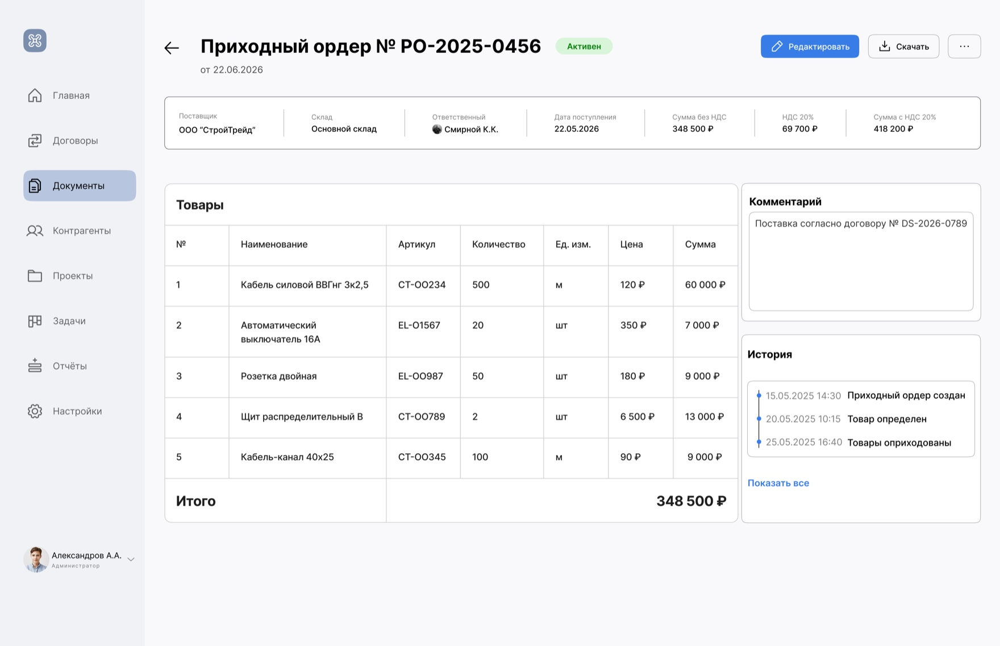
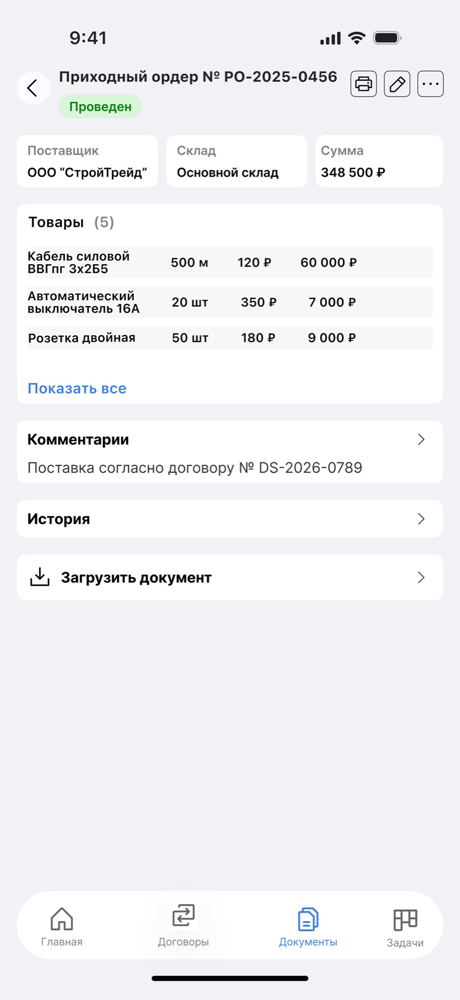

Контроль договора
Начать со статуса, ближайшего срока, доли исполнения и оплаты. Затем открыть реквизиты контрагента или проверить, что изменилось.
05 / UX/UI · КОРПОРАТИВНАЯ СИСТЕМА
Два рабочих экрана для сотрудников, которые ведут договоры и сверяют поставки. Карточка договора отвечает на вопрос «Что со сроками и оплатой?», а приходный ордер — «Что именно приняли на склад?».
Посмотреть сценарии01 / Контекст и задача
Когда сотрудник открывает договор, ему важно быстро понять, всё ли идёт по плану. При сверке поставки задача меняется: нужно сопоставить конкретные позиции, количество и суммы. Эти сценарии определили, какая информация окажется на первом экране каждого документа.
Начать со статуса, ближайшего срока, доли исполнения и оплаты. Затем открыть реквизиты контрагента или проверить, что изменилось.
Убедиться, что открыта поставка нужного поставщика и склада. Затем сверить количество и цену по строкам и посмотреть итог документа.
В проекте определены иерархия данных, компоновка двух типов документов и порядок раскрытия деталей на телефоне.
02 / Карточка договора
Статус «Активен» не говорит, сколько осталось исполнить и какую сумму ещё нужно оплатить. Поэтому в верхнюю сводку вынесены четыре самостоятельных показателя: статус, срок до исполнения, ход работ и оплата.
Финансы и исполнение разнесены по блокам: оплаченная сумма и этапы отвечают на разные вопросы. Контрагент, история и файлы остаются рядом, чтобы можно было проверить детали, не покидая карточку.
Четыре показателя собраны в сетку 2 × 2. Ниже сразу видны контакт, остаток и сроки; документы и история открываются из отдельных строк со счётчиками.
03 / Приходный ордер
Приходный ордер фиксирует поступление товаров на склад. Поставщик и склад помогают опознать поставку, а таблица отвечает за сверку: что поступило, в каком количестве и по какой цене.


Артикул, количество, единица измерения, цена и сумма разнесены по столбцам. Над таблицей показаны суммы с налогом и без него, а комментарий с номером договора и история не занимают место внутри таблицы.
Сначала видны поставщик, склад и сумма. Товары показаны компактно: наименование, количество, цена и сумма остаются в строке, а полный список раскрывается по кнопке «Показать все».
04 / Правила адаптации
Адаптация начинается с вопроса, на который сотрудник должен ответить. В договоре это состояние обязательств, в ордере — состав поставки. Экраны сохраняют этот порядок на обеих ширинах.
| Уровень | Компьютер | Телефон |
|---|---|---|
| Сводка | Показатели в одной строке. | Короткие карточки с ключевыми данными. |
| Рабочие данные | Параллельные панели или полная таблица. | Вертикальные разделы или короткий список с раскрытием. |
| Дополнительный контекст | История, файлы и комментарий рядом. | Отдельные строки под основным содержанием. |
Следующий шаг перед внедрением — согласовать единый словарь статусов и явно подписать суммы с налогом и без него на обеих ширинах. В макетах эти детали показаны по-разному, хотя запись должна читаться одинаково.
05 / Итог и проверка
Спроектированы карточка договора и приходный ордер для компьютера и телефона. В договоре на первом уровне видны обязательства, в ордере — данные поставки и товары. Получился набор макетов, на котором можно проверить, хватает ли сотрудникам сводки для быстрых решений.